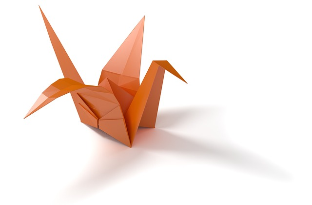
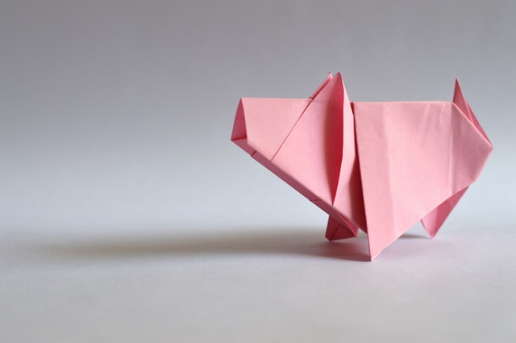
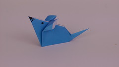

The crane is the classic origami. Even a beginner can make it. There are lots of stories around the paper crane

You can use patterned or colored paper to make your origami more interesting. Isn't the pig even more cute when it is pink?

This is kind of cheating, but it can be fun to draw stuff on the origami, too. You have to wait for it to be folded, because it's hard to figure out where everything should go before.